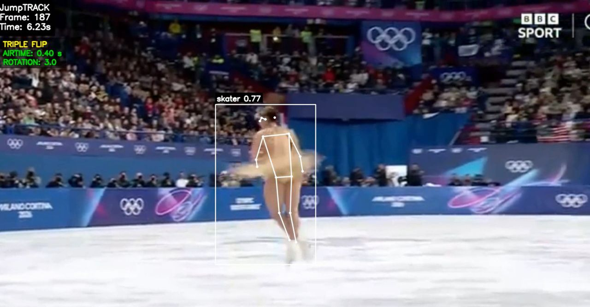
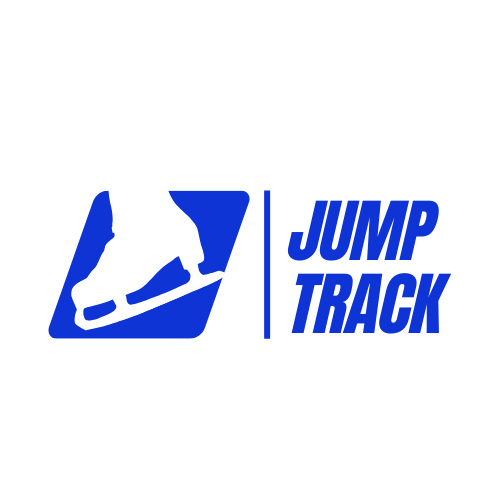

Computer vision · Pose estimation · Sports analytics

JumpTRACK
Automated analysis of figure skating jumps from broadcast video. YOLOv8 detection and pose estimation track the skater, an OpenCV ice-line estimator gives a ground reference, and an air signal fusing foot clearance with hip velocity is segmented with hysteresis to find takeoff and landing. Jump height comes from airtime, and every frame is rendered with the skeleton and a live jump read-out.
The math behind it
-
Picking the skater
Broadcast frames are full of people: judges, coaches, the crowd. Each detected person is scored on how central and how large their box is, and the lowest score wins.
score = α · d / D + (1 − α) · (1 − A / Amax), α = 0.7d = distance from box centre to frame centre, D = frame diagonal, A = box area, Amax = largest box in the frame.
-
Finding the ice
To know when the skater leaves the ground, the system needs to know where the ground is. It searches a narrow band around the skater's feet for the strongest horizontal edge, which is where the boots meet the ice.
E(y) = meanx | ∂(Gσ ∗ I) / ∂y |, y* = argmaxy E(y)I = greyscale image, Gσ = 9×9 Gaussian blur, ∂/∂y = Scharr vertical gradient. Search band: 10% of box height above the box bottom to 20% below it.
Camera pans make the raw estimate jumpy, so it is rate-limited and then smoothed with an exponential moving average:
Δ = clamp(y* − ŷt−1, −10px, +10px)ŷt = (1 − β) · ŷt−1 + β · (ŷt−1 + Δ), β = 0.15 -
The air signal
Each frame gets one number saying how airborne the skater looks. It is built from two cues and normalised by box height h, so it works whether the camera is wide or zoomed in.
Clearance: the gap between the lowest ankle and the ice line. If the ankles are lost to motion blur, it falls back to the hips, assuming the feet sit 0.45h below them.
c = (ŷice − yfoot) / hHip velocity: upward motion adds to the signal, while fast downward motion is treated as a landing and scales the whole signal down.
v = (yhip,t−1 − yhip,t) / hsv = 0.3 · v if v > 0, λ = max(0, 1 + 5v) if v ≤ 0s = 0 if c < 0.02, otherwise s = (0.7 · c + sv) · λ, clipped to [0, 2] -
Takeoff and landing
A single threshold flickers on and off when the signal is noisy. Instead the system uses hysteresis: a high threshold to start a jump and a lower one to keep it going.
enter air when s ≥ 0.20, stay in air while s ≥ 0.12During fast rotation the pose model can drop out for a few frames, so gaps of up to 3 frames are bridged. A jump only counts if it lasts between 5 and 30 frames, which filters out stumbles and tracking glitches.
-
Height from airtime
Once airborne, the skater is a projectile: the only vertical force is gravity. With takeoff and landing at the same height, the flight is symmetric, so the time to the peak is half the airtime T.
h = ½ · g · (T / 2)² = g · T² / 8, T = Nframes / fpsThis needs no camera calibration or pixel-to-metre conversion, only an accurate frame count. For example, 0.5 s of airtime gives 9.81 × 0.25 / 8 ≈ 0.31 m. Jumps under 0.20 m are discarded as noise.